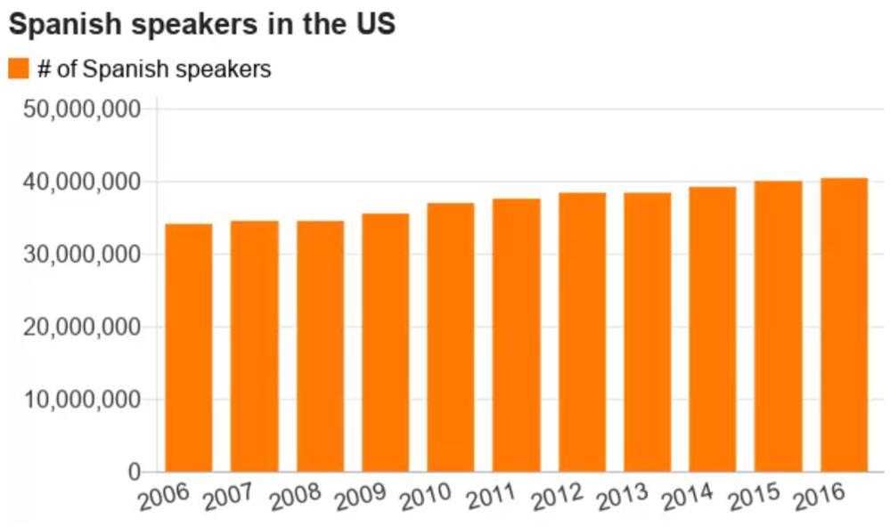

5.1 Reading Check Quizzes
Check Canvas for the weekly Reading Check Quizzes (RCQs).
5.2 Discussion Post
Discussions of Stories Told Through Data Viz
Submission: Completed discussion post + replies.
Part 1 – Discussion Post (10 Points)
For this discussion I would like for you to post a link to a story that includes data visualization that effectively supports a narrative. This can be from any form of digital media (newspapers, blogs, video journalism, etc.).
You will also include written argument in your post about why the data visualization is compelling and effective within the broader narrative, from the perspective of the Storytelling with Data book concepts: effective visual for data context (Chapter 2), uncluttered display (Chapter 3), features that focus attention (Chapter 4).
You may find that some of these areas could be improved. This will not affect your grade for the discussion; so, please be critical and honest in your assessment. If the article contains several data visualizations, you should focus your discussion on the design of one specific plot.
Part 2 – Replies (10 Points)
In addition, I would like for you to comment on at least TWO other student submissions to discuss your agreement or disagreement about the efficacy of the plots, and what could be done to adapt them.
Keep your comments on topic and respectful. Ideally everyone will receive peer feedback; so, if possible, make your replies on the posts that have not yet been discussed.
Example post (for an example of the quality / depth expected)
Article link: https://www.bbc.com/news/world-us-canada-44201444

An incident in Montana with border patrol and two women sparked controversy over the status of Spanish speakers in the eyes of law authority. Two women were questioned and detained for merely speaking Spanish. After describing this event, the article dove into the growing number of Spanish speakers within the United States.
To visualize these numbers, they showed a bar chart of the number of Spanish speakers in the U.S. for recent years. Based on the principles discussed in Storytelling with Data, this was a very effective visual. As an audience, we tend to move across visuals in a “z” shape. In accordance with this, the important information that we need to know before even seeing the data was placed at the top left (i.e. the title, legend and axis). The placement of these elements prepped me to be able to understand the data.
In addition, the axis borders and grid lines were a very faint grey, so they kind of just faded into the background. This allowed the data to pop out and be the main attention grabber, which allowed me to clearly see and pick up on the increasing trend as years increased. Thus, their claim of increasing amount of Spanish speakers in the U.S. was backed up with their visual. Because this is a fairly simplistic chart, I did not see any aspects that needed improving.
Example reply
It’s definitely a nice and simple chart, which makes it easy to read. However, since I think the trend is the main point, I wonder if perhaps a line chart would have been better, especially since time is a continuous variable. On the other hand, I think you could also argue that by creating a line graph we are sort of imputing information about the time between the years that we just don’t have. So in a sense a bar chart is more honest.